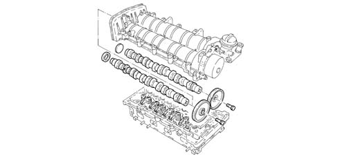
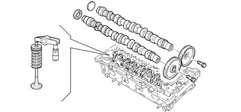

1036G CAMSHAFT (1) IN CAMSHAFT HOUSINGS (2)
- Path
- Descriptions > 10 ENGINE > 1036 TIMING SYSTEM > 1036G CAMSHAFT (1) IN CAMSHAFT HOUSINGS (2)
- Kind
- system description
- Applies to
- engines: 1.9 JTD 16v; all production periods
- Interactive page
- https://sloeber94.github.io/elrnDB-fCrm/en/#/194002374
Applies to: engines: 1.9 JTD 16v; all production periods
CONSTRUCTION SPECIFICATIONS
CAMSHAFTS
Cast iron, with tempering on the cams.

The exhaust camshaft is controlled directly by the timing belt and transmits power to the inlet camshaft by means of a pair of straight toothed gears.
The exhaust camshaft also controls the vacuum unit fitted on the gears side.
TAPPETS
Each valve uses a hydraulic tappet operated by a rocker arm, in turn, moved by the camshaft.
The rocker arms are designed to prevent serious damage to the other engine components if the timing belt slips or breaks; in effect, as a result of pre-set fracture lines, the stresses caused through the contact of the valves with the pistons are absorbed.
